Entertainment |
|
Hue Christmas for Philips Hue
All I want for Xmas is HUE. Hue Christmas is the perfect way to get in the holiday mood with your Philips Hue lights. It is a Sound and Light Effects Board, that works with your Philips Hue connected light bulbs. |
| 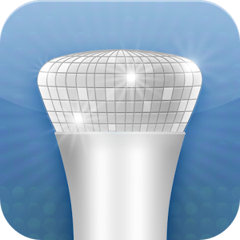 |
Hue Disco
Finally it's here. Hue Disco for Android! An amazing controller for your Philips Hue connected house or business. Turn your ordinary livingroom into a dancefloor. Use your Hue Connected restaurant as a party location without the need for an expensive lightplan. Hue Disco does it all with your Philip... |
|
Hue Fireworks for Philips Hue
Have firecrackers explode in your room and let colourful rockets lit the ceiling. Hue Fireworks can count down for you and have the party crowd go wild at 00:00 on New Years Eve, Chinese New Year the 4th on July, Quatorze Juillet or any other occasion that deserves an explosive celebration. Hue Fire... |
| 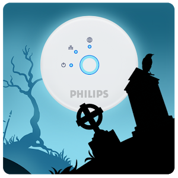 |
Hue Halloween
Hue Halloween is a Sound and Light Effects Board, that works with your Philips Hue Connected Light Bulbs. !! Halloween Sound FX in sync with Halloween Hue Light FX !! |
| 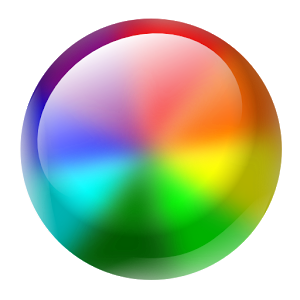 |
hueManic
Makes you Philips HUE lights dynamic! (Philips HUE light bulbs and the WiFi bridge is needed!) Tired of the static scenes in the official HUE app. Enjoy dynamic HUE. In the mood of a clam evening, hueManic will create a perfect illusion of a fireplace in your living room. Party lights turn your mus... |
| 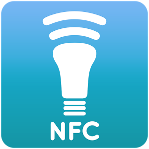 |
NFC Hue free
Changing the state of your light bulbs could be cumbersome (unlock the phone, open app, find light settings - turn on/off) What if you can use the NFC chip available on your device to predefine specific NFC tags and use your phone as an on/off switch with the added option to automatically change the... |
Lifestyle |
| 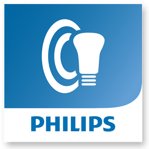 |
Ambilight+hue
Extend your Ambilight TV experience to your hue light bulbs with the new Ambilight+hue app! Using your Ambilight TV and hue light bulbs, this app creates a complete experience in your Ambilight TV room! After connecting to your Ambilight TV and hue light bulbs, it will extend the Ambilight colors to... |
|
Hue Alarm Clock
"Not a morning person? Start lighter! Hue Alarm Clock turns your Philips Hue Light Bulbs into a friendly alarm clock. Set alarms, colors, effects, and switch on and off all lights with one button right from your bed. Finally gets you into your biorhythm with ease. I've also developed a ""Blue Sky E... |
| 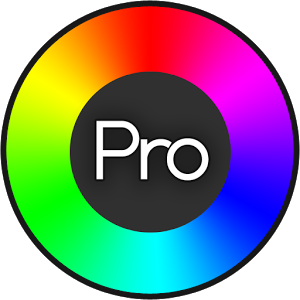 |
Hue Pro
Hue Pro is a new way to use your Philips Hue lighting system. It provides all the features of the native Philips Hue Android application, such as lighting presets. But it can also be used for scheduling events with alarms and timers. By scheduling an event you can set light presets to come on (or of... |
| 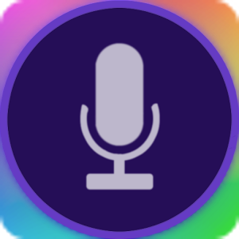 |
Hue Talk
"The fun way to control your Philips Hue bulbs. Use voice commands and hue will be kind enough to talk back to you. Many configurable commands for changing your bulbs colours or simply say any sentence with any of the main colours in it. e.g. ""Please change my bulbs to green red and blue, thanks""... |
| 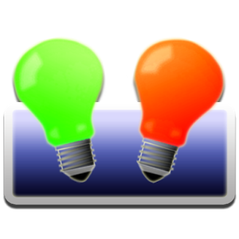 |
Hue Widget
Quick. Easy. Widgets! With Hue Widget, you can quickly create re-sizable widgets for both your home screen and lock screen. Start creating widgets right away from the widget menu from your device in 3 simple steps: |
| 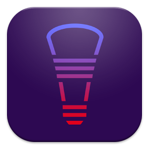 |
huerray! (for Philips Hue)
This is a remote app for the Philips Hue light system. You need at least the Philips Hue Bridge for using this app. You can connect also Living Colors, Living Whites and Living Ambient lights to the Hue Bridge. |
|
Huey - Ambient Light Effects
Change the way you watch TV, Movies and Gaming with Huey! Huey uses your device's camera and microphone to dynamically change colors on your Philips Hue or LIFX light bulbs. By pointing your camera to your TV or display, you can create dramatic lighting effects for a more realistic and immersive exp... |
|
IFTTT
"Put the internet to work for you. IFTTT lets you create powerful connections with one simple statement — if this then that. Activate your Channels and create Recipes on IFTTT!" |
| 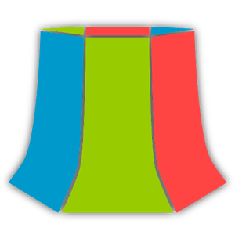 |
LampShade.io for Hue & LIFX
"LampShade provides convenient and useful controls for smart home lighting. Currently supports: Philips Hue, LIFX (beta)" |
| 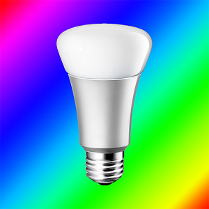 |
LightControl (for Philips Hue)
LightControl is an application for controlling your Philips Hue lighting system. It provides quick manual controls over the single light or a group as well as presets. In addition it will provide alarms, widgets and tasks support as an in-app product. LightControl is designed around the separation... |
|
Muzzley
Muzzley,All your smart things, one common interface. Muzzley will give you the following key features:
* All your devices will become cloud controllable;
* Connect all your things to this single entry point for the Internet of Things; |
|
openHAB
This is a native Android user interface application for openHAB - an open source home automation system. The open Home Automation Bus (openHAB) project aims at providing a universal integration platform for all things around home automation. It is designed to be absolutely vendor-neutral as well as ... |
|
Speech Hue
"Walk into your living room, sit down on your comfortable couch to watch TV, and simply say ""movie time"". Speech Hue allows you to set the color of your Philips Hue lights in your home from your phone. Create customized themes by adjusting the hue of each connected bulb for the rooms in your home... |
| 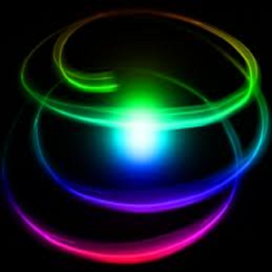 |
Speedy Hue (Lite)
This application goes hand in hand with the Philips HUE application, and extends it even further. This application allows you to quickly turn lights on and off. It utilizes the information setup in the HUE base station, and allows you to interact with it with ease. It even allows you to set schedule... |
Personalization |
| 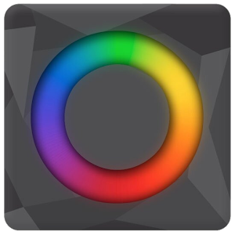 |
Uber Away
Uber Away allows you to link your Nest, Phillips Hue Bulbs, and Estimote iBeacons to ensure that you never leave the house with your lights on or your AC running again! After pairing your Hue Bridge and logging into your Nest account, create your pairings, and the next time you enter the region spe... |
Productivity |
|
HomeGenie
Client App for HomeGenie, an open source home automation server supporting X10, Z-Wave, Philips Hue and more.Client App for HomeGenie, an open source home automation server supporting X10, Z-Wave, Philips Hue and more. |
| 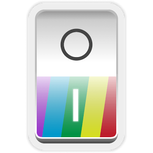 |
Hue Control
Hue Control allows you to control your Philips Hue lights quickly and conveniently right from your lock screen or Android wearable. Organize your lights into groups and quickly change their color by adding your own color presets for maximum efficiency. This app allows you to configure your lights, ... |
|
Pomodoro technique with Hue
Efficiency of the work will improve lighting. Color will help me your task. Timer work together to Hue by Philips, I change the color of the light. By changing to your favorite color, the efficiency of your work goes up! |
|
Quick Hue
Control your Philips Hue lighting system from your phone or tablet, over the local network Quick Hue lets you control your Philips Hue lights over the local network in a quick and simple fashion. Tired of color swatches? Quick Hue lets you change the light with a easy to use color wheel. |
| 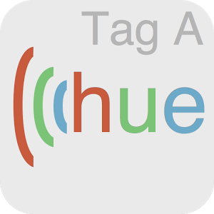 |
Tag-A-Hue
Phillips Hue lights are amazing, and so is the power of NFC! with Tag-A-Hue, we have combined the strengths of both to give you a powerful new way to control your home lights. Use this app to associate a specific bulb or group of bulbs with an NFC tag, and when that tag is scanned, the app will det... |
Tools |
| 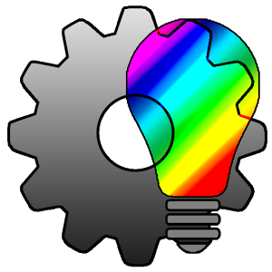 |
AutoHue (Tasker Plug-in)
**Requires Tasker or Locale to function** Ever wanted to control your Philips Hue Lights without reaching for a remote? Or have the lights turn on automatically as soon as you enter your home? Or have the lights blink when you receive a new notification? Well now you can do this with AutoHue! |
| 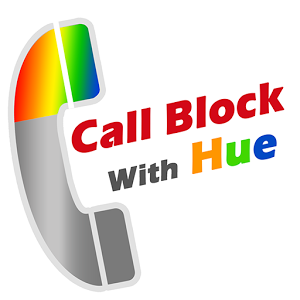 |
Call block with Hue
Give your HUE notification to call. If you're setting, HUE lights up when phone ringing. |
| 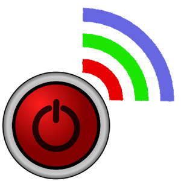 |
hue Switch NFC
A simple App for changing state of your Philips hue lights using NFC tags.Options:
1) Switch OFF - Always switch off, doesn't matter which state the light currently has.
2) Switch ON/OFF - Toggle light depending on the current light state.
3) Switch ON - Always switch on, doesn't matter whi... |